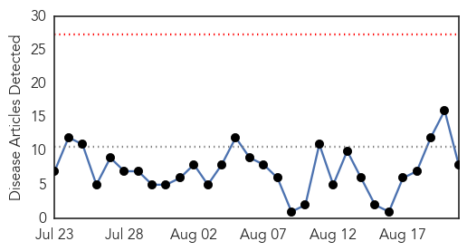
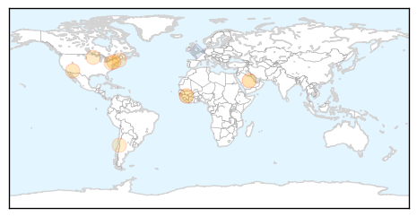

30 Day Trends
Web: 0 alerts, 0 warnings
Twitter: 2 alerts, 0 warnings
Top Articles:
- 0.995
- News Scan for Aug 21, 2015
- 0.949
- Scientists synthesise DNA in hunt for MERS vaccine
- 0.751
- August 20, 2015 Archives
- 0.751
- August 20, 2015 Archives
- 0.645
- Early planning, coordination vital in coping with livestock diseases
- 0.639
- Farmers preparing for potentially devastating bird flu
- 0.577
- CSF employees get free flu vaccines
- 0.553
- leader.mainelymediallc.com
Top Tweets:
- 0.531
- Post-pandemic influenza a (H1N1) 2009 virus infection in pregnant women in Ceará Brazil http://t.co/zUVGd3wYsI
Web/News Articles
Tweets

Article Locations
Article Confidences